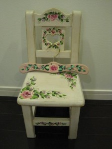

みえさんが作って下さった子供用椅子とハンガー
この椅子とハンガーは娘が生まれた時にトールペイントの先生をされている、みえさんという素敵な方が作ってくださったものです。娘の名前や生まれた年まで入れて下さったんです。本当にありがとうございました！遊びに来る人来る人みんな、かわいいーと大絶賛の椅子です！
私のアクセサリーのページにも使わせていただいています。http://www.no-sinker.co.jp/eccube/html/products/detail.php?product_id=9
みえさんの教室H・P http://www.atelier-menina.com/
みえさんのブログ http://mielblog.atelier-menina.com/
娘が小さいときから、机にして、椅子にして、遊んできたもので（乱暴に扱ってごめんなさい。。）、愛着がますますです。
私は小学校5年生の頃に、吹田から、箕面に引っ越してきました。そして、中学2年位の時にゴールデンレトリバーの女の子を飼い出しました。少し後だったと思いますが、同じマンションにゴールデンのバディちゃんを連れていた素敵なお姉さんがみえさんでした。そのあたりから、母子ともに親しくなりました。
みえさんは、当時から変わらず美しくて、当時から今も百楽荘のご実家で、トールペインティングの先生をされています！
当時から、ご実家や梅田阪急のSESSEなどで作品展や楽しいイベントを精力的にされていて、女の子なら、小さい子供から、お年寄りまで、思わず声をあげたくなる、ハートが暖かくなる、素敵な作品をたくさん創作されています。
先日、みえさんと子連れ（うちの笑）でお昼ご飯をご一緒しました。箕面から川西に引っ越して以来だったので、すごい久しぶりでした。こちらから誘っておいて、ご馳走になってしまいました（＾＾：）。ご馳走様でした！！みえさんのように、好奇心がいろんな方へあって、でも、自分の道は一本、まっすぐ、という生き方が本当に魅力的で、憧れです。いろいろお話できたことが楽しく、時間があっという間に過ぎました。その後、教室をされているご実家にもお邪魔させていただいたのですが、ゴールデンレトリバーのバディちゃんと感動の再会をしました。
うちの犬は年で1年前の秋に亡くなったんですが、バディちゃんときたら、年齢をそれなりに重ねていたものの、やっぱり女の子ーというオーラが出てて、可愛すぎます。この愛くるしい感じは前のままでした。胸きゅーんでした。長生きしてね！
そして教室されているお２階は夢の世界でした。トールペインティングされた、小物や家具がぎっしりときれいに並べられていて、幸せオーラが充満していました。あー幸せだった！
その上、うちの娘にワンストロークペインティングのレッスンまでして頂いて・・・。親子ともどもみえさんにメロメロです。本当にありがとうございました！もう少し大きくなったら、是非習わせたいです。
話はみえさんの話に戻りますが、私が大学生の頃、自分には何ができるのか、模索中で、全然大したものじゃなかったんですけど、友達と絵の個展をやる機会があって、京都までわざわざ来てくれたんです。大学生と言っても全然子供の絵をわざわざ見に来てくれたこと、今でも思い出して感謝しています。いつも、いつも、暖かく応援して下さってありがとうございます。

{kind=link}
{kind=link}
{kind=link}
{kind=link}
{kind=link}
{kind=link}
{kind=link}
{kind=link}
{kind=link}